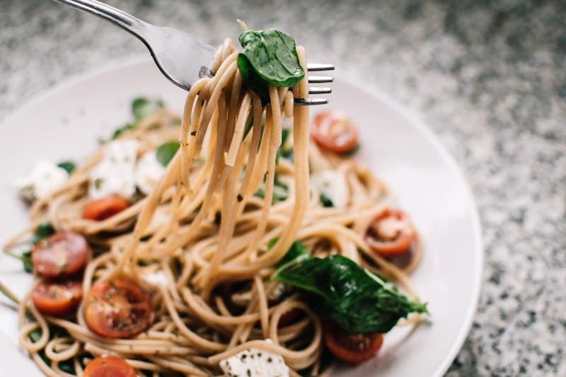

Menu
SIGNATURE COURSES

桜鯛のカルパッチョ
柚子と白ワインで締めた桜鯛に、フィノッキオの香りをまとわせて。

京筍とポルチーニのリゾット
和出汁とパルミジャーノでじっくり炊き上げる季節の一皿。

和牛ラグー タリアテッレ
赤ワインで6時間煮込んだ国産和牛を手打ちパスタで。

鴨胸肉のロースト
バルサミコと黒無花果のソース、京水菜のサラダと共に。

アクアパッツァ 京風
舞鶴港の鮮魚を使った蒸し煮。九条ねぎの香りをプラス。